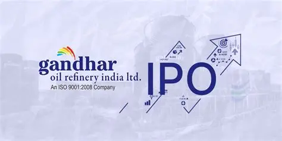

Gandhar Oil Refinery IPO - Everything You Must Know
Should You Invest in This Specialty Oil Manufacturer?

Gandhar Oil aims to capitalize on India's growing demand for white oils and petroleum products.
Gandhar Oil Refinery is all set to hit the Indian stock market with its much-awaited IPO. The company, known for its expertise in specialty oils, has created a solid niche across healthcare, lubricants, and industrial sectors. If you're an investor eyeing value-driven IPOs in 2025, this one deserves your attention.
About Gandhar Oil Refinery
- Established in 1992, Gandhar Oil Refinery (India) Limited manufactures white oils, liquid paraffin, petroleum jelly, and more.
- The company operates in over 100+ countries and serves industries such as pharma, personal care, and automotive lubricants.
- Brand Name: “Divyol” – highly recognized in the lubricant industry.
Gandhar IPO Details
IPO Opening Date
15 July 2025
IPO Closing Date
17 July 2025
Price Band
₹160 - ₹170 per share
Lot Size
88 Shares
Issue Size
₹500 Cr (Fresh + OFS)
Listing Date
22 July 2025
Stock Exchange
NSE & BSE
Company Strengths
- Strong global presence with export contributing to over 30% of revenue.
- Diverse product portfolio serving pharma, FMCG, and automotive sectors.
- Stable profit margins and consistent revenue growth over the last 3 years.
- Experienced management and in-house R&D capabilities.
Risks to Consider
- Highly dependent on crude oil price fluctuations.
- Competition from global and domestic specialty oil manufacturers.
- Regulatory risks related to environmental compliance and import/export policies.
Gandhar Oil Refinery IPO brings a well-diversified specialty oil player to the market. With its strong fundamentals, product demand, and global expansion, it looks promising for long-term investors. However, like all IPOs, weighing risks and doing your own due diligence is essential before subscribing.